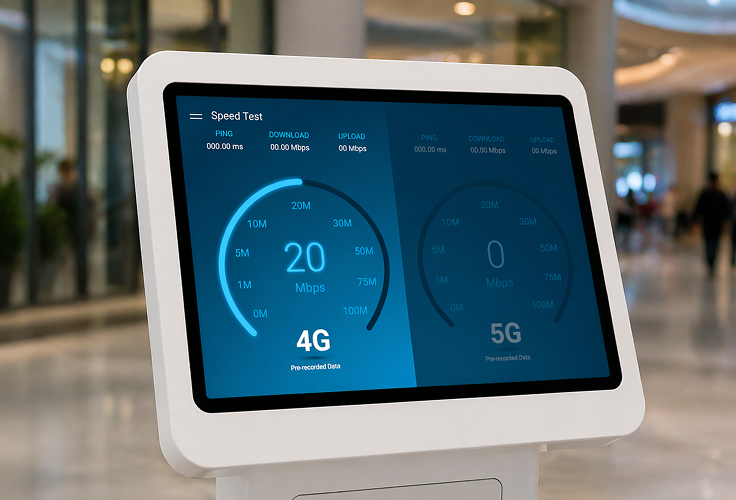
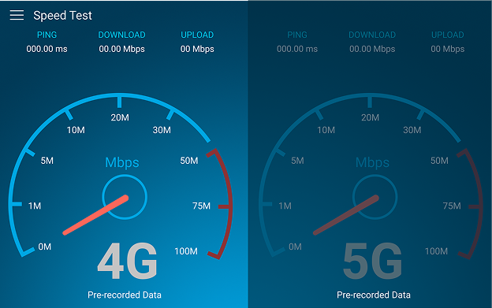
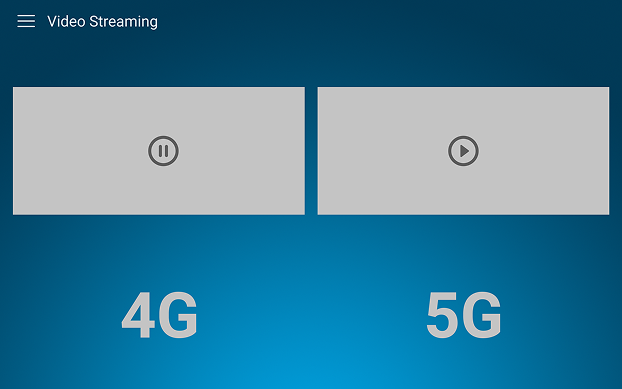
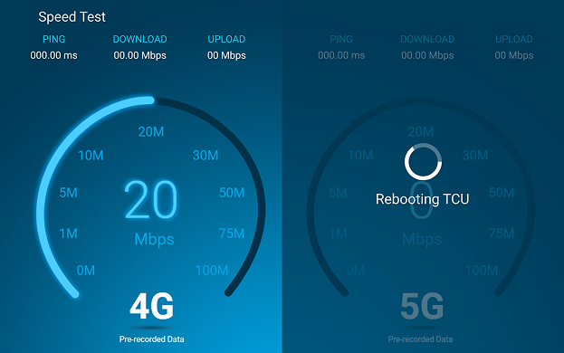
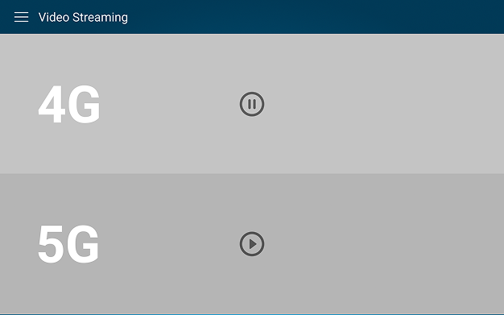
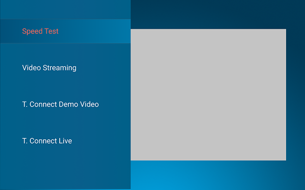
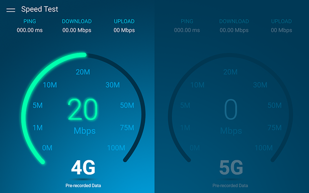

Kiosk application
Harman and AT&T
Harman partnered with AT&T to create an interactive demo illustrating the performance differences between 4G and 5G network speeds. The experience was designed for portable kiosks displayed at events and conferences. My role focused on concept development, wireframing, iterative design, and delivering polished high-fidelity screens in Figma.

The Challenge
AT&T needed a compelling, easy-to-understand application to demonstrate the real-world speed and quality improvements gained with 5G.
Initial concepts lacked visual impact and did not clearly highlight the difference between 4G and 5G performance. What was needed:
Research & Design
Because kiosks are typically used in high-traffic, high-distraction environments, the UI needed to be visually bold, fast to interpret, and engaging from a distance.
Event attendees, industry partners, press & media, and potential clients
Maintain consistency with AT&T and Harman visual design guidelines
Keep the interface simple, clean, and intuitive for touch interaction

Early design iteration of speed test

Early design iteration of video screen

Design changed to give it a modern feel

Design changed to make the videos more immersive

Side menu to switch between speed test and video streaming demo

Experimented with green color for added visual contrast, but ultimately went with blue to stay more aligned with AT&T branding